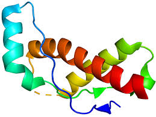

已成篇
2024.6.23
关于蛋白质在极特殊极特殊生物中作为遗传物质的猜想
基于朊病毒的自我复制特性与逆转录机制，探讨蛋白质作为原始遗传载体的可能性，并以“中心法则”在极端情形下的边界作为讨论对象。
- 研究问题
- 蛋白质能否像 DNA、RNA 一样，成为极特殊生物的遗传物质？
- 研究方法
- 理论分析：逐一检验同位素标记、密度梯度离心、减法原理与序列测定四种经典证明思路在逆转录病毒上是否成立，并结合蛋白质与病毒溯源假说展开论证。
- 核心结论
- 提出假说认为逆转录酶参与遗传信息传递时依然离不开 RNA，同时推测蛋白质可能在非生物向生物过渡阶段充当过类遗传载体；文中亦明确指出该议题在学界尚存争议。